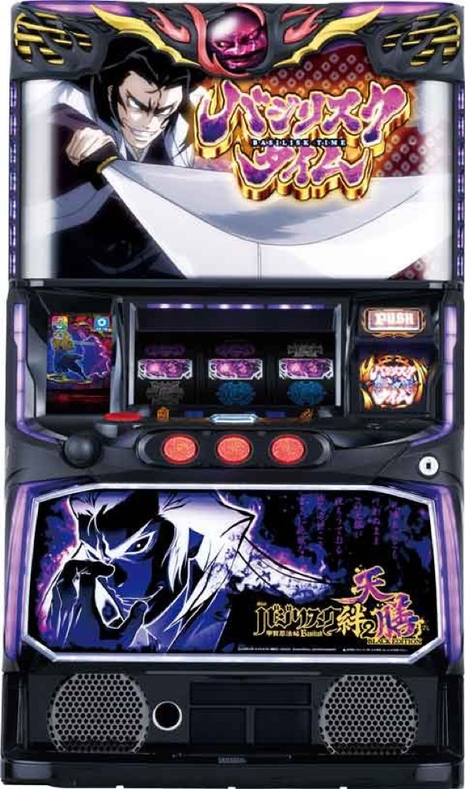

スマスロ バジリスク絆2 天膳 BLACK EDITION
16GのBCから、追想の刻・争忍の刻・絆高確・宿怨チャレンジへ。
- 導入
- 2023年12月
- メーカー
- ミズホ
- 分類
- パチスロ
主要スペック
BCでBTを目指し、追想の刻10G＋αと争忍の刻平均30Gを10種類のシナリオで進めます。初回絆高確、月下閃滅、12セット完走後の宿怨チャレンジと天膳BTまでを専用表示します。
- 通常BCは16G、BTは1セット平均約40G
- BT純増約2.9枚/G・全10種類のシナリオ管理
- 宿怨チャレンジは成功期待度50%超・失敗してもBT
スマスロ バジリスク絆2 天膳 BLACK EDITIONの見どころと計算条件
BCでBTを目指し、追想の刻10G＋αと争忍の刻平均30Gを10種類のシナリオで進めます。初回絆高確、月下閃滅、12セット完走後の宿怨チャレンジと天膳BTまでを専用表示します。
バジリスク天膳を数字で早分かり
バジリスクチャンスからバジリスクタイム、天膳BTまでの流れと、設定ごとの結果差を固定レートで比較できます。
30秒で分かるバジリスク天膳
16GのBCからBTへ入り、追想10G＋争忍平均30Gをセットごとのシナリオランクと絆高確で突破する台です。
こんな遊び方に向いている
- BCからBTまでの当落をPUSHで見たい
- 12セットのシナリオ変化を確認したい
- 宿怨チャレンジから天膳BTを狙いたい
遊ぶ前に確認したいこと
- BC・BT確率、ゲーム数、純増、シナリオ表は公開値
- A〜Dの具体率など未公表部分は代表値
- 宿怨失敗時も通常BTへ進む
BCからBTを目指す通常時
通常時は成立役、モード、内部状態に応じてBCを抽選。異色BC・同色BCは16Gで、BC当選時と消化中にBTを抽選します。
同色BCはBT期待度50%以上。EPBCとPBCは30GでBT濃厚となるため、通常BCと別イベントで表示します。
追想の刻と争忍の刻
BTは純増約2.9枚/G・1セット平均約40G。前半の追想の刻10G＋αでBCと絆玉を抽選し、後半の争忍の刻平均30Gで甲賀勝利を目指します。
BT初回セットは絆高確。絆玉1〜4個で縁・想・恋・絆が点灯し、対応役でBC当選を狙います。
10種類のBTシナリオ
継続率はA〜Fを12セット1組で並べた全10種類のシナリオで管理されます。設定1の公開振り分けを使い、各セットの継続ランクを結果に表示します。
A〜Dの具体的な継続率は非公表のため、サイト内では強弱関係を保つ代表値で判定します。Eは継続濃厚、FはA〜Eのいずれかとして扱います。
月下閃滅と宿怨チャレンジ
10人状態の完全勝利などから月下閃滅へ進むと、BTストックを獲得する特化ゾーンとして別表示します。
宿怨チャレンジはカットイン3回までで成功期待度50%超。成功時は激闘シナリオの天膳BT＋初回10人状態、失敗時も通常BTへ進みます。エンディング後は必ず宿怨チャレンジへ進みます。
固定条件と簡略化する範囲
- 約31.7G/50枚・1,000円46枚貸し・5.2枚交換で固定
- BC・BT設定別確率、シナリオ表と設定1振り分けは公開値
- 継続率A〜D、絆玉獲得率、BT中BC率、月下閃滅率、宿怨ポイントMAX率は代表値
- 19,000枚到達時はコンプリート表示
平均Gと投資目安の計算
掲載するバジリスクタイム初当り約1/418.1は設定1基準です。当サイトでは50枚あたり31.7G、1,000円46枚貸しの固定条件から、設定1基準の平均投資目安を約14,300円と計算します。
シミュレーターでは設定1〜6を均等抽選します。設定1〜6で公開されている初当り値を個別に使います。公開されていない特化ゾーン・上位到達率の設定差は加えません。 換金は5.2枚交換で固定し、結果とランキングに設定を表示します。
シミュレーション結果の見方
当るまでバジリスクチャンス・バジリスクタイムまでのゲーム数
設定設定1・2・3・4・5・6から抽選された今回の設定
上位到達宿怨チャレンジと天膳BTへの到達
最終収支差枚と5.2枚交換の収支目安
結果は自動で「マイ記録」に保存され、同じ機種を何回試したか、最高収支、勝率をあとから確認できます。
簡易シミュレーターについて
バジリスクチャンス・バジリスクタイム・天膳BTの流れを固定条件で体験できます。JavaScriptを有効にすると、この位置にシミュレーター、演出、マイ記録、機種別ランキングが表示されます。
結果は娯楽・確率理解のための参考表示です。金銭的価値や交換価値はなく、実際の勝敗や収支を保証しません。18歳未満の方の利用はお控えください。
バジリスク天膳のよくある質問
バジリスク天膳はどんな台？
BCでBTを目指し、追想の刻10G＋αと争忍の刻平均30Gを10種類のシナリオで進めます。 通常BCは16G、BTは1セット平均約40Gが主な確認ポイントです。
バジリスク天膳の平均投資目安は？
設定1基準のバジリスクタイム初当り約1/418.1と、50枚あたり31.7G・46枚貸しの固定条件から、平均14,300円を目安として表示します。実際の設定や遊技状況で結果は変わります。
設定とゲームの流れはどう抽選する？
開始時に設定1・2・3・4・5・6から1つを均等抽選し、バジリスクチャンス、バジリスクタイム、宿怨チャレンジ、天膳BTの順で到達を判定します。設定は最終結果とランキングに表示します。
収支はどう計算する？
1,000円46枚貸し・5.2枚交換の固定条件で投資、換金、収支目安を計算します。実店舗の再プレイ、持ちメダル、端数処理は含みません。